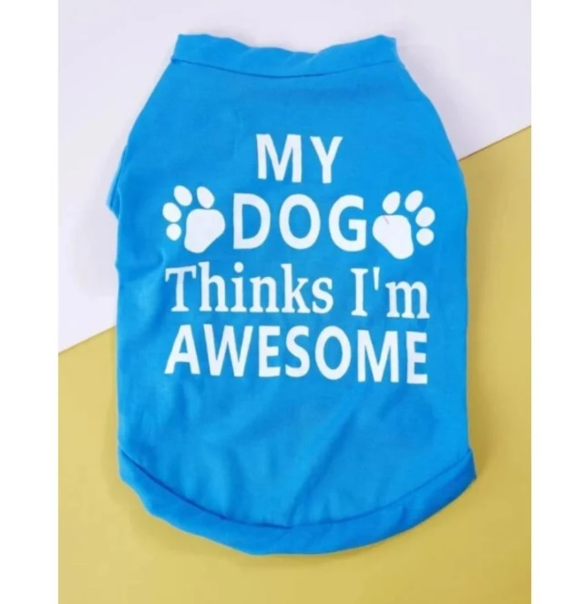
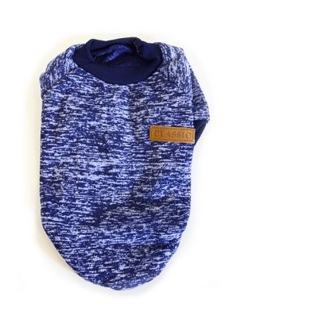

|

Για να παραμείνει το αγαπημένο σας τετράποδο ζεστό και στυλάτο!
Ιδανικό για βόλτες σε κρύο καιρό. Το ύφασμα είναι απαλό που δεν ενοχλεί το
σκύλο.
|

Ο άσχημος καιρός δεν χρειάζεται να ακυρώνει τις βόλτες με το
φιλαράκι σας! Με το συγκεκριμένο ρούχο, θα παραμείνει "ζεστό" και θα
συνεχίσει να απολαμβάνει μαζί σας τις βόλτες!
|